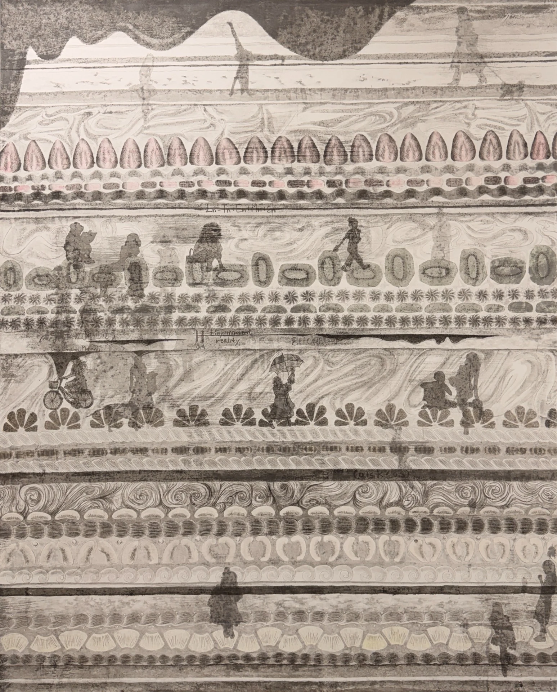
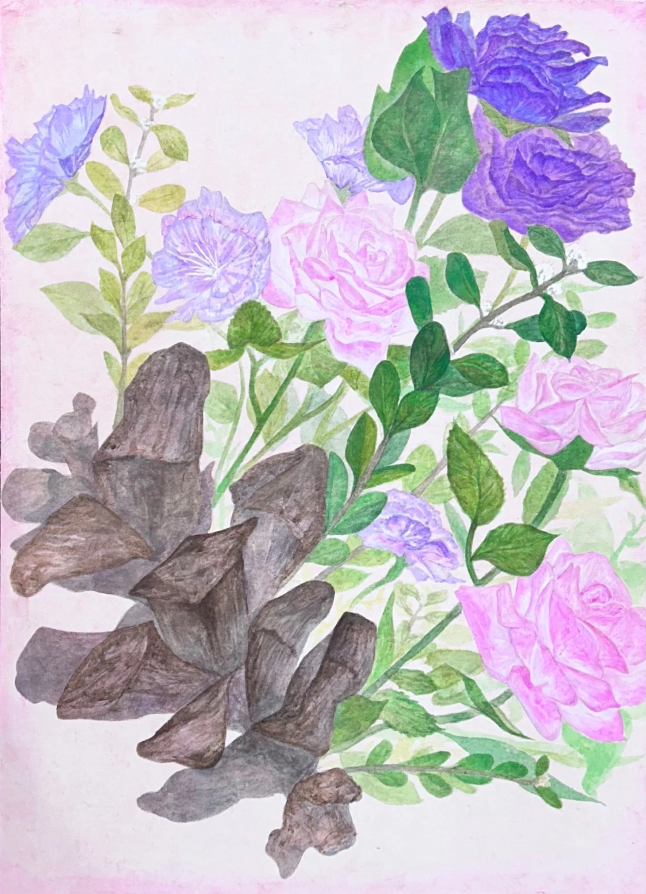

CONTEMPORARY KOREAN PAINTING · VISUAL PRACTICELEE SUMIN / 2026

ON THE CANVAS
THE PRACTICE / 2024—2026일상이 남긴 흔적을
다른 형식으로 열다.
수묵의 여백, 케이크의 단면, 서로 다른 감정이 머무는 사물들. 재료와 시간의 관계를 하나의 이미지 안에 담아냅니다.
작가의 이야기 읽기 ↗

01 / ACCUMULATION · 2026
02 / FRESHNESS · 202403 / ARTIST STATEMENT
작가 노트
ART & LIFE04 / ARTWORK ARCHIVE작품 아카이브 INDEX
작품을 누르면 재료·연도·크기와 상세 설명을 볼 수 있습니다.
13 WORKS
05 / MOVING IMAGE
VIDEO ART01:30
06 / ARTIST PROFILE
이수민 LEE SUMIN
PAINTING / TIME / MEMORY / OPENING
10 / RESEARCH & WRITING작업 기록 JOURNAL
작가가 직접 공유한 블로그 원문으로 연결됩니다. 작품 설명과 연구 기록을 확인할 수 있습니다.
블로그 전체 보기 ↗